This is an example of recording a Midi pattern into MusE 3.0.2 using Qjackctl and a Boss DR-880 with USB Midi.
The basic procedure should be the same for most devices but device details do differ from one to another. e.g., some devices always require enabling the Midi channels to send, they don’t default to any channel being ON.
Settings
Prepare the device for transmitting Midi.
DR-880 Midi settings:
Connect the DR-880 to the computer.
Go to the pattern you want to transfer.
Press Edit.
Scroll through the list to “USB”.
Set Mode to “MIDI”.
Exit once, then Exit again to the Edit list.
Select “Midi -> Setting”.
Note the Channels for Drum and Bass; defaults are 10 and 2.
Set “Sync Mode” to “Internal”.
Exit once, then Exit back to the Pattern screen.
Start MusE.
Go to Qjackctl:
Open Connect -> ALSA.
Connect “Readable clients ->”0:DR-880 MIDI 1" to “Writable clients -> 0:MusE Port 0”.
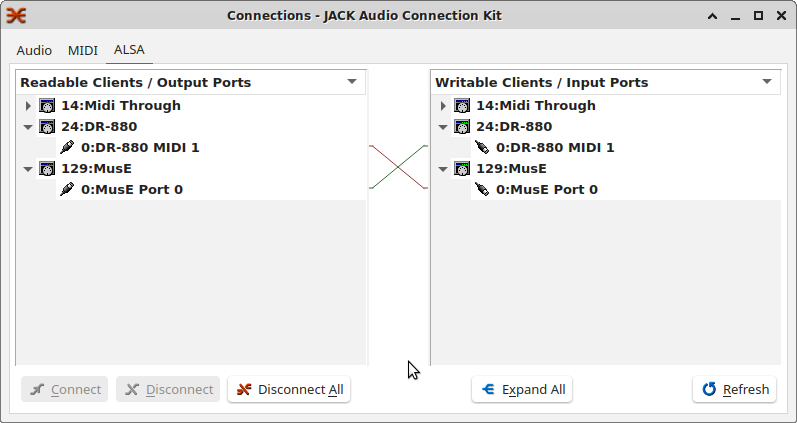Jack Connections
To also use the DR-880 as the output device:
Connect “Readable clients ->”0:MusE Port 0" to “Writable clients -> 0:DR-880 MIDI 1”.
In MusE:
Go to “Muse Settings -> Midi sync”; this shows a table of devices and their sync options.
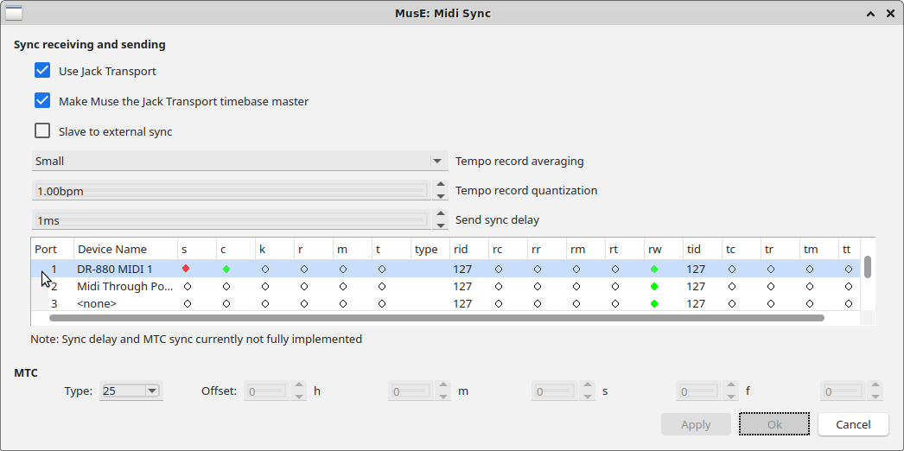Midi Sync Dialog
Set the JACK options:
Use Jack Transport: ON
Make Muse the Jack Transport time base master: ON
Slave to external sync: OFF
Set the DR-880 row to:
s(ync) - ON
c(lock) - ON (set by MusE)
rw (Receive start rewinds before playing) - ON
rid = tid = 127 (all)
all others OFF
Set up the recording track
Add a Drum track to Muse. The Ch output column should show 10, the default drum channel. However, that might not be what the input channel is set to.
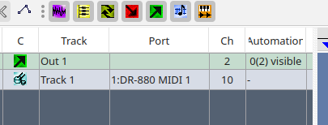Add Drum Track
Click the Track 1 input routing arrow on the track mixing strip.
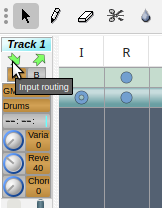Input Routing Arrow
Either “Omni” or 10 should be selected.
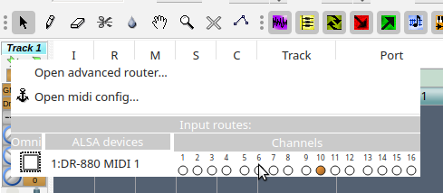Track Input Channel
Left Click the Port entry, select “Open midi config”.
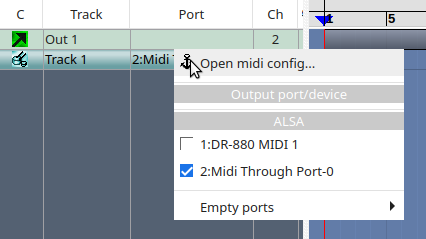Port - Open Midi Config
Under “Usable devices” in the DR-880 row, select I and O.
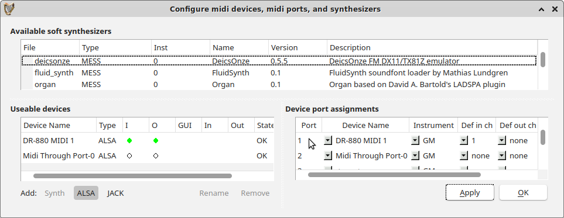Device Port Assignments
Under “Device port assignments”, set Port 1 (for example) to DR-880 MIDI 1.
Select an Instrument. GM is OK.
For subsequent tracks, set “Def in ch” (“Default in ch”) to “none”, “all”, or a specific channel transmitted by the device; for the DR-880 it’s typically 10 for drums, 2 for bass.
NOTE: “Def in ch” will be applied to tracks added after this one. It does not affect the track input channel set above.
Click OK to save.
Left Click the track Port entry again.
Select DR-880 MIDI 1.
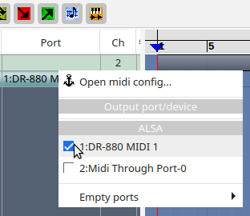Select Track Port
In the track mixing strip, left Click the instrument input.
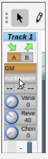Set Track Instrument
Select a drum kit.
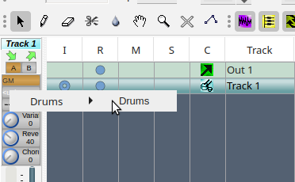Select Track Instrument
Set the track to record.
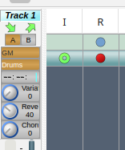Set Track Record
Recording
Click the RECORD button.
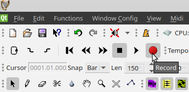Start Recording
The Create Project dialog appears; fill it out and click OK. MusE should now be in standby mode.
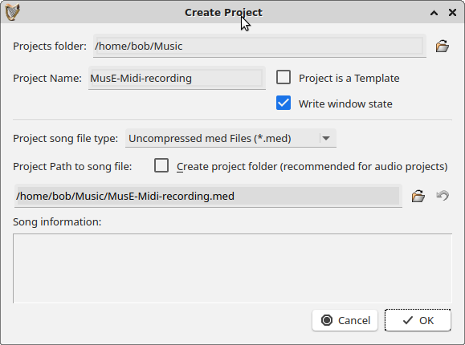Create Project Dialog
To record, the transport has to be rolling. One way to do this is to click PLAY on the MusE transport panel.
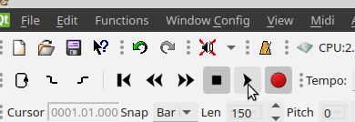Start Transport
The track starts filling with an empty region:
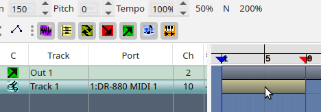Transport Rolling
Press the play button on the DR-880.
In MusE, press the STOP button. The track should show the pattern just played.
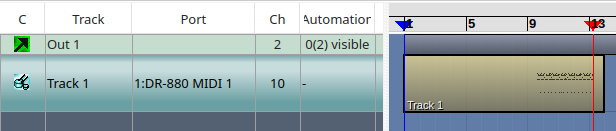Midi Recorded
Problems
If the pattern isn’t recorded, a common problem is that the device Midi output channel numbers don’t match the MusE input channels. Reviewing those before doing anything else is a good first step.